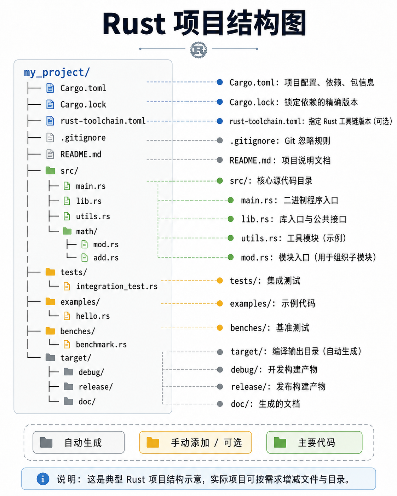

Rust 项目结构、模块系统与包管理
1️⃣ Rust 项目结构
Rust 项目通常由 Cargo 管理，Cargo 是 Rust 的官方包管理和构建工具。
更多cargo命令见Cargo命令参考，本节不在介绍cargo 如何创建项目等操作。

项目根目录文件
| 文件 / 目录 | 作用 | 结构概览 |
|---|---|---|
Cargo.toml | 项目配置文件，管理 crate 信息、依赖、版本、特性等 | TOML 格式，包含 [package]、[dependencies]、[dev-dependencies]、[workspace] 等 |
Cargo.lock | 依赖锁定文件，记录精确依赖版本，保证跨环境一致性 | 自动生成，列出每个 crate 的精确版本和来源 |
toolchain.toml | 可选手动添加，指定 Rust toolchain 版本和 channel | TOML 格式，如 [toolchain] channel = "stable" |
target/ | 构建输出目录 | 编译生成的二进制文件、依赖 crate 编译产物、doc 文档等 |
.gitignore | Git 忽略文件配置 | 通常忽略 target/、Cargo.lock（库 crate 可选） |
README.md | 项目说明文档 | Markdown 格式 |
LICENSE | 许可证文件 | 如 MIT、Apache 2.0 等 |
rustfmt.toml | 可选，格式化规则 | 配置 rustfmt 行为 |
clippy.toml | 可选，lint 规则 | 配置 clippy 检查规则 |
src/ 目录
| 文件 / 目录 | 作用 | 结构概览 |
|---|---|---|
main.rs | 二进制 crate 入口 | fn main() { ... } |
lib.rs | 库 crate 入口 | 公共接口，通常声明模块和导出函数 |
mod.rs | 模块目录入口（可选） | 声明子模块 pub mod xxx; |
| 子模块文件 | 实现模块功能 | xxx.rs 或 xxx/mod.rs，内部函数和类型 |
示例结构：
src/
├── main.rs
├── lib.rs
├── utils.rs
└── math/
├── mod.rs
└── add.rs
tests/ 目录
- 集成测试
- 每个文件作为一个测试模块，Cargo 会自动识别并执行
tests/
└── integration_test.rs
示例内容：integration_test.rs
#![allow(unused)]
fn main() {
// 引入库 crate
use my_project::utils;
use my_project::math::add;
#[test]
fn test_add_function() {
let result = add::add(2, 3);
assert_eq!(result, 5);
}
#[test]
fn test_utils_uppercase() {
let input = "hello";
let output = utils::to_uppercase(input);
assert_eq!(output, "HELLO");
}
}examples/ 目录（可选）
- 示例代码
- 用于演示库 crate 用法，
cargo run --example example_name执行
examples/
└── hello.rs
benches/ 目录（可选）
- 性能测试
cargo bench执行- 常用 Criterion 库写基准测试
target/ 目录
-
编译输出目录
-
包含：
debug/和release/构建产物- 编译依赖的 crate（cargo build 缓存）
doc/自动生成文档
说明： 不需要手动管理，由 Cargo 生成。
Cargo 自动生成与手动添加文件总结
| 文件 | 类型 | 是否自动生成 | 作用 |
|---|---|---|---|
| Cargo.toml | 配置 | 自动 | 项目信息、依赖、features |
| Cargo.lock | 锁定 | 自动 | 精确依赖版本 |
| toolchain.toml | 配置 | 手动/可选 | 指定 Rust toolchain 版本 |
| target/ | 输出 | 自动 | 编译产物、文档、缓存 |
| main.rs / lib.rs | 代码 | 自动（cargo new） | 入口文件 / 库接口 |
| mod.rs / 子模块 | 代码 | 手动 | 模块组织 |
| tests/ / examples/ / benches/ | 代码 | 手动可选 | 测试、示例、基准 |
| README.md / LICENSE | 文档 | 手动可选 | 项目说明 / 许可证 |
| rustfmt.toml / clippy.toml | 配置 | 手动可选 | 格式化 / Lint |
2️⃣ Rust 模块系统
模块系统管理 作用域和可见性，允许将代码组织成清晰层次。
2.1 mod 声明
- 声明模块
- 可以在同文件或单独文件定义
示例：单文件模块
mod utils {
pub fn add(a: i32, b: i32) -> i32 {
a + b
}
}
fn main() {
let sum = utils::add(2, 3);
println!("{}", sum);
}示例：多文件模块
项目结构：
src/
├── main.rs
└── utils.rs
main.rs：
mod utils; // 引入 utils.rs 文件
fn main() {
let sum = utils::add(2, 3);
println!("{}", sum);
}utils.rs：
#![allow(unused)]
fn main() {
pub fn add(a: i32, b: i32) -> i32 {
a + b
}
}2.2 子模块
- 使用
mod xxx;声明子模块 - 可以在
mod.rs或目录下xxx.rs文件定义
示例项目结构：
src/
├── main.rs
└── math/
├── mod.rs
└── add.rs
math/mod.rs：
#![allow(unused)]
fn main() {
pub mod add; // 引入 add.rs
}math/add.rs：
#![allow(unused)]
fn main() {
pub fn add(a: i32, b: i32) -> i32 {
a + b
}
}main.rs：
mod math;
fn main() {
let sum = math::add::add(2, 3);
println!("{}", sum);
}2.3 可见性控制
Rust 的默认模块 是私有的，意味着模块内部的函数、结构体、常量等默认 只能在当前模块内访问。
要让其他模块或 crate 能访问，就需要使用 pub 及其变体 来控制可见性。
可见性关键字
| 可见性 | 作用 | 访问范围 |
|---|---|---|
pub | 公开 | 对整个 crate 或外部 crate 可见 |
pub(crate) | crate 内部可见 | 同一个 crate 内都可以访问，外部 crate 不可见 |
pub(super) | 父模块可见 | 仅对父模块和父模块的兄弟模块可见 |
pub(in path) | 指定模块可见 | 只能在指定模块或其子模块访问 |
示例解析
假设项目结构如下：
src/
├── main.rs
└── a/
├── mod.rs
└── sub.rs
示例代码
#![allow(unused)]
fn main() {
mod a {
fn private_fn() {
println!("只能在 a 模块内部访问");
}
pub fn public_fn() {
println!("对外公开，可被 main.rs 调用");
}
pub(crate) fn crate_fn() {
println!("在当前 crate 内可见，但外部 crate 不可访问");
}
pub(super) fn parent_fn() {
println!("对父模块可见（main.rs 或兄弟模块）");
}
pub(in crate::a) fn in_module_fn() {
println!("只在 a 模块或子模块可见");
}
}
}main.rs 调用规则
fn main() {
a::public_fn(); // ✅ 可访问
a::crate_fn(); // ✅ 可访问（同 crate）
a::parent_fn(); // ✅ 可访问（main.rs 是父模块）
// a::private_fn(); // ❌ 编译报错，私有
// a::in_module_fn(); // ❌ 编译报错，不在指定模块范围
}可见性理解图（文字版）
my_crate
│
├─ main.rs <- 父模块
└─ a/ mod.rs <- 子模块 a
├─ private_fn() // 只在 a 内部
├─ public_fn() // crate 内 + 外部 crate
├─ crate_fn() // crate 内
├─ parent_fn() // 父模块可见（main.rs）
└─ in_module_fn() // 仅在 a 模块或子模块
mod 默认行为
#![allow(unused)]
fn main() {
mod a { ... }
}前面需不需要加 pub，这取决于 你希望这个模块是否对外可见:
mod 默认行为
-
mod a { ... }- 默认是私有的
- 只在 父模块 内可见
- 外部模块或 crate 不能直接访问
pub mod 的作用
-
写成
pub mod a { ... }- 模块变成 公共模块
- 父模块外部可以访问
- 在库 crate 中，外部 crate 可以用
my_crate::a::foo()调用
示例：库 crate
#![allow(unused)]
fn main() {
// lib.rs
pub mod a {
pub fn public_fn() {
println!("外部 crate 可访问");
}
fn private_fn() {
println!("仅 a 模块内部可访问");
}
}
}在外部 crate 调用：
#![allow(unused)]
fn main() {
// main.rs in other crate
my_crate::a::public_fn(); // ✅ 可访问
// my_crate::a::private_fn(); // ❌ 编译报错
}模块层级总结
| 声明 | 模块可见性 | 访问范围 |
|---|---|---|
mod a | 私有 | 父模块内可访问 |
pub mod a | 公共 | 父模块 + 父模块外可访问 |
| 子模块内部函数默认私有 | 私有 | 仅在该模块内部可访问 |
子模块内部函数 pub | 公共 | 父模块可访问，如果父模块 pub mod，外部 crate 也可访问 |
小结
- 库 crate：如果希望外部 crate 使用模块，
pub mod a必须加pub - 二进制 crate / 内部模块：通常不用
pub，默认私有即可 - 模块内部的函数、类型：再用
pub或可见性修饰符控制访问范围
2.4 导入、使用函数
分为两种情况: 有lib.rs 无lib.rs
没有 lib.rs（纯二进制 crate）
假设项目：
src/
├── main.rs //main.rs 是根模块,并声明了 math 模块和 utils 模块 mod utils; mod math;
├── utils.rs
└── math/
├── mod.rs
└── add.rs
编译器查找顺序：
mod utils; → 查找 src/utils.rs 或 src/utils/mod.rs （两者按照道理不会同时存在） mod math; → 查找 src/math.rs 或 src/math/mod.rs （两者按照道理不会同时存在）
总结：根模块（main.rs）是入口 → 模块声明 → 模块路径解析 → use 按模块层级查找。
有 lib.rs（库 crate）
假设项目：
src/
├── main.rs
├── lib.rs //lib.rs 声明模块 pub mod utils; pub mod math;
├── utils.rs
└── math/
├── mod.rs
└── add.rs
编译器查找顺序：
crate 根是 lib.rs
按 pub mod 声明顺序查找模块文件
utils → src/utils.rs 或者 src/utils/mod.rs
math → src/math.rs 或者 src/math/mod.rs
注意：外部 crate 调用你的库总是从 lib.rs 根开始（用 crate:: 或 my_crate:: 路径）
如果项目有 lib.rs，main.rs 想使用 math/add.rs 中的函数，有哪些导入方式
以有 lib.rs（库 crate）为例，导入 math/add.rs 中的函数，有哪些导入方式
1.通过 lib.rs 中重新导出函数（lib.rs中声明了 pub mod math; ）
use my_project::add; // 直接使用重新导出的函数
fn main() {
let result = add(5, 6);
println!("5 + 6 = {}", result);
}2.通过 mod math 直接导入
mod math;
use math::add::add;
fn main() {
let result = add(2, 3);
println!("2 + 3 = {}", result);
}Rust 模块文件查找原则
1、默认情况下，Rust 只会在 crate 根（src/）及其子目录 查找模块。
2、mod xxx; 会去以下路径查找：
xxx.rs
xxx/mod.rs
3、如果模块不在 src/ 内部，编译器不会自动找到，除非通过 路径引入或 workspaces。
my_project/
├── Cargo.toml
├── src/
│ └── main.rs
└── math/
└── add.rs
这里 math/ 不在 src/ 内，所以：
直接写 mod math; 会报错，编译器找不到 src/math.rs 或 src/math/mod.rs
需要告诉 Rust 显式路径 或 把 math 变成 crate（workspace）的一部分）
把 math 作为子 crate,通过 path 依赖进行声明（ 或者构建workspace，math 下新创建 Cargo.toml）
2.5 Rust 导入路径：crate:: vs my_crate::
1、 crate::
- 表示当前 crate 根
- 只在同一个 crate 内部使用
- 可以从根模块（lib.rs 或 main.rs）开始相对引用模块和函数
- 常用于库内部模块之间调用
- crate:: 只能在 同一个 crate 内使用，外部 crate 不可用。
2、my_crate::
- 表示外部 crate 的名称
- 外部 crate 调用你的库时使用
- crate 名就是你在 Cargo.toml中[package] name = “my_crate” 中定义的名称
- 外部 crate 必须通过 crate 名来访问，你不能用 crate::，因为 crate:: 指的是调用者自己的根模块。
3️⃣ Crate 与包管理
3.1 crate 类型
- 二进制 crate：生成可执行程序，入口
main.rs - 库 crate：提供可复用代码，入口
lib.rs - 一个 Cargo 项目可以同时包含二进制 crate 和库 crate。
3.2 依赖管理
依赖类型
[dependencies]
regex = "1" # 精确版本
serde = { version = "1.0", features = ["derive"] } # 启用特性
[dev-dependencies]
[build-dependencies]
1、[dependencies]：声明项目运行依赖
[dependencies]
rand = "0.8"
Cargo 会下载 crate 并在构建时编译，默认导入到项目中可直接 use rand::Rng;
2、[dev-dependencies]：开发依赖（测试、示例代码）
[dev-dependencies]
criterion = "0.4"
只在测试或基准测试中使用,cargo build 不会编译 dev-dependencies,cargo test 或 cargo bench 会编译
3、[build-dependencies]：构建脚本依赖
[build-dependencies]
cc = "1.0"
仅用于构建脚本 build.rs,编译时 Cargo 会使用这些依赖生成文件或处理构建任务
4、可选依赖 / features
4.1 可选依赖（optional dependency） - 一个依赖 不一定总被编译 - 只有在需要时才启用，节省编译时间和二进制大小 - 常用于库 crate，允许用户选择功能模块
[dependencies]
serde = { version = "1.0", optional = true ,features = ["derive"]} # optional = true 表示可选 ,依赖不默认编译
4.2 Features - 用来 组合可选依赖或控制功能 - 可以在 Cargo.toml 中声明，默认启用或手动启用 - 控制是否启用 optional 依赖或功能
[features]
default = [] # 默认启用的依赖有[]中的内容，此处为空，默认没有任何 feature 启用
json_support = ["serde_json"] # json_support feature 启用 serde/json
4.3 main.rs 或库代码中使用可选依赖
#[cfg(feature = "json_support")] // 仅在 feature 启用时编译
pub fn parse_json(s: &str) -> serde_json::Value {
serde_json::from_str(s).unwrap()
}#[cfg(feature = "xxx")] 宏控制 编译条件,如果用户没启用 json_support，这段代码不会编译.
4.4 如何启用 Features
[dependencies]
serde_json = { version = "1.0", optional = true }
[features]
default = []
json = ["serde_json"]
可选依赖只有在指定 feature 时才会编译,通过 –features json 激活,cargo build --features json_support。默认构建 cargo build （不启用任何 feature） 启用多个 feature（假设有多个）cargo build --features "json_support other_feature"
版本管理规则
Cargo 遵循 语义化版本（SemVer）：
MAJOR.MINOR.PATCH
1、^ 号（Caret）：默认依赖策略
serde = "^1.0" # >=1.0.0, <2.0.0
2、~ 号（Tilde）：仅允许小版本更新
serde = "~1.0.115" # >=1.0.115, <1.1.0
3、= 号（Equal）：指定精确版本：
serde = "=1.0.115" # 仅 1.0.115
4、* 号（Star）：指定通配符：
serde = "1.*" # >=1.0.0, <2.0.0
3.3 Rust Workspace（工作区）结构
Workspace 概念 - Workspace 是 多个 crate 的组合 - 共享同一个 Cargo.lock - 可以统一构建、测试和管理依赖 - 常用于大型项目或多个相关 crate 的组织
Workspace 根目录 - 根目录 必须有 Cargo.toml，声明 workspace 成员 - 根目录下通常不放源码，源码在各个子 crate 中
示例：
my_workspace/
├── Cargo.toml # workspace 根配置
├── crate_a/ # 第一个 crate
│ ├── Cargo.toml
│ └── src/
│ └── lib.rs
├── crate_b/ # 第二个 crate
│ ├── Cargo.toml
│ └── src/
│ └── main.rs
└── target/ # 构建输出，workspace 共享
根 Cargo.toml 配置:
[workspace]
members = [
"crate_a",
"crate_b",
]
[workspace.dependencies]
//内部依赖
crate_a = { path = "../crate_a" }
crate_b = { path = "../crate_b" }
//外部依赖
serde = { version = "1.0" ,features = ["derive"]}
members 列出 workspace 内的所有 crate, 可以是相对路径，也可以是子目录
1 子 crate 相互依赖
假设 crate_b 依赖 crate_a：
[dependencies]
crate_a = { workspace = true } # 路径依赖
main.rs 中调用：
use crate_a::some_function;
fn main() {
some_function();
}2 Workspace 优点 - 统一管理依赖，避免重复下载 - 多 crate 构建和测试统一 - 子 crate 相互依赖方便（用 path） - 适合大型项目和库 + 可执行程序组合